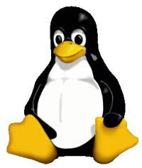

For desktop systems, access to a LAN or the Internet has become such an expected feature that in many ways it's hard to discuss an operating system without making reference to its connections to other computers and servers. Operating system developers have made the Internet the standard method for delivering crucial operating system updates and bug fixes. Although it's possible to receive these updates via CD or DVD, it's becoming increasingly less common. In fact, some entire operating systems themselves are only available through distribution over the Internet.  Further, a process called NetBooting has streamlined the capability to move the working operating system of a standard consumer desktop computer -- kernel, user interface and all -- off of the machine it controls. This was previously only possible for experienced power-users on multi-user platforms like UNIX and with a suite of specialized applications. NetBooting allows the operating system for one computer to be served over a network connection, by a remote computer connected anywhere in the network. One NetBoot server can serve operating systems to several dozen client computers simultaneously, and to the user sitting in front of each client computer the experience is just like they are using their familiar desktop operating system like Windows or Mac OS. One question concerning the future of operating systems concerns the ability of a particular philosophy of software distribution to create an operating system usable by corporations and consumers together. Linux, the operating system created and distributed according to the principles of open source, has had a significant impact on the operating system in general. Most operating systems, drivers and utility programs are written by commercial organizations that distribute executable versions of their software -- versions that can't be studied or altered. Open source requires the distribution of original source materials that can be studied, altered and built upon, with the results once again freely distributed. In the desktop computer realm, this has led to the development and distribution of countless useful and cost-free applications like the image manipulation program GIMP and the popular Web server Apache. In the consumer device realm, the use of Linux has paved the way for individual users to have greater control over how their devices behave. Many consumer devices like cell phones and routers deliberately hide access to the operating system from the user, mostly to make sure that it's not inadvertently broken or removed. In many cases, they leave a "developer's mode" or "programmer's mode" open to allow changes to be made; howe3ver, that's only if you know how to find it. Often these systems may be programmed in such a way that there are only a limited range of changes that can be made.Some devices leave both a mode of access and the means of making powerful changes open to users, especially those that use Linux. Here are a couple of examples: The TiVo DVR runs on a modified version of Linux. All of the modifications are public knowledge, and can be downloaded here along with some special tools for manipulating the code. Many enterprising TiVo users have added functionality to their systems, including increasing the storage capacity to getting to UNIX shells to changing the mode from NTSC to PAL. Many home routers also run on Linux.